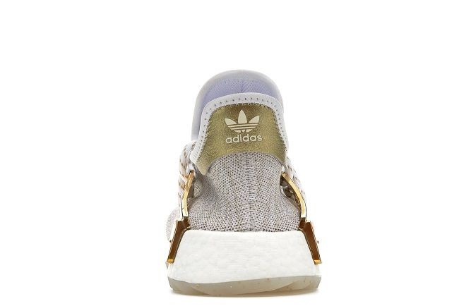

Adidas Pharell NMD CNY GOLD
The China Exclusive Pharrel Gold Human Race sneaker features a large text embroidered onto the upper of the shoe in both Chinese and English. The “Happy” (Gold) colourway of this sneaker has been set to a limited “friends and family” release and only 300 pairs available worldwide. Besides that, the sneaker comes with lacing cages and soles that are in white.